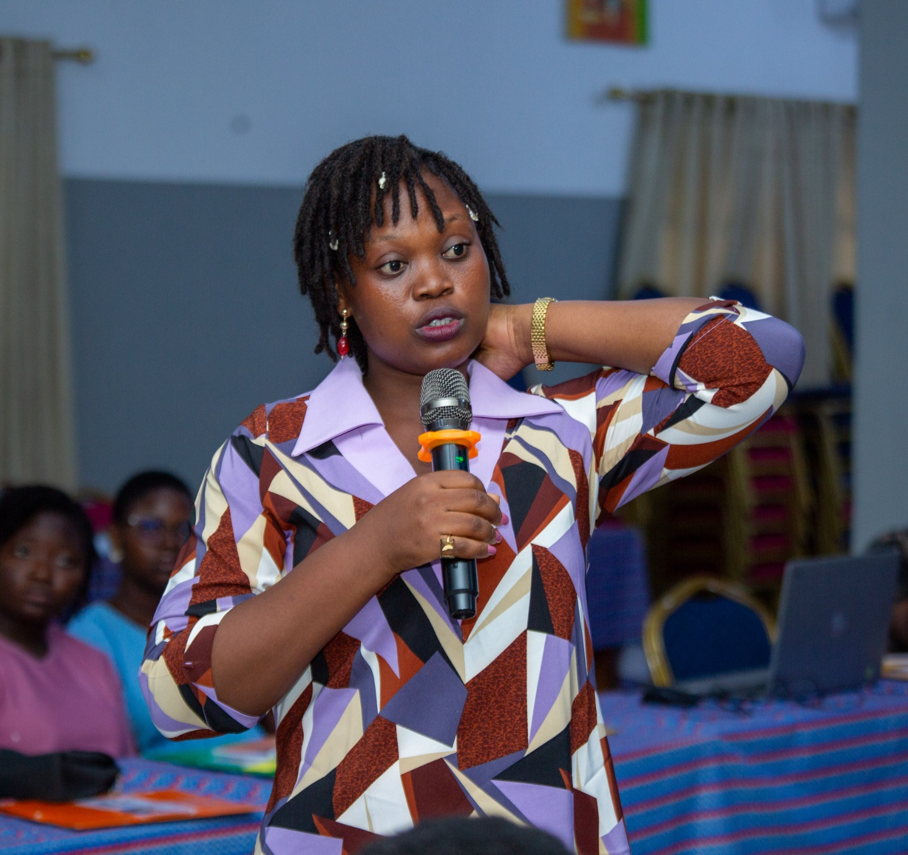
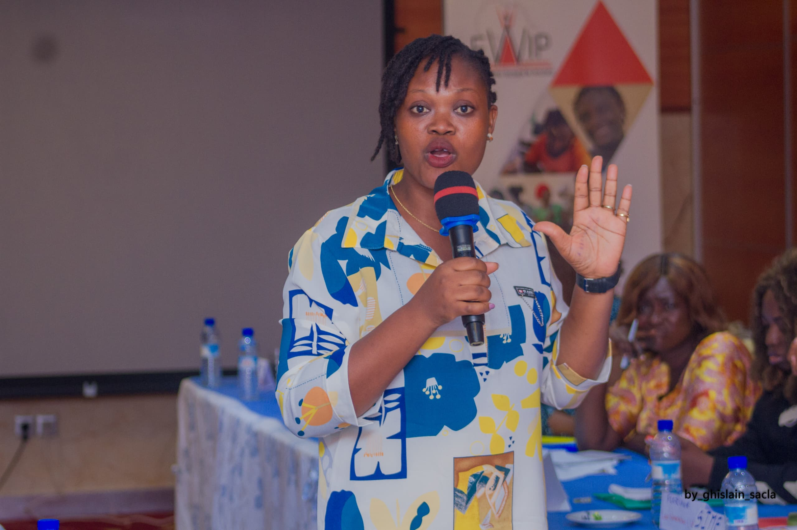

Sisters Mentors
Engagement comme mentor au sein du programme porte par Benin Women Alumni Association pour transmettre confiance, reseau et leadership aux jeunes femmes.
Journaliste, experte Genre et medias, specialiste des competences de vie et fondatrice de DG PARTNERS ONG. Elle accompagne les jeunes, les femmes, les medias et les organisations vers un leadership utile, inclusif et responsable.

Basee au Benin
Abomey-Calavi, Atlantique

Profil professionnel
Pendant 15 ans, Dorice DJETON a concilie sa passion pour le journalisme avec son engagement au service de la paix, de la securite et de l'inclusion. Laureate de plusieurs prix medias au Benin et dans la sous-region, elle intervient sur l'Education aux Medias et a l'Information, les soft skills, les violences basees sur le genre facilitees par la technologie et la citoyennete numerique responsable.
Initiative
Women Journalists for Investigation
Projet initie en 2022 avec le soutien de l'Ambassade des USA pour former de jeunes femmes journalistes a l'investigation.
Organisation
DG PARTNERS ONG
Association engagee pour le bien-etre des filles, l'autonomisation des femmes et l'education citoyenne aux medias.
Le profil LinkedIn de Dorice DJETON rassemble plus de 9 665 abonnes et met en avant ses prises de parole sur le mentorat, la collaboration hybride, la sante mentale, la sororite et le leadership feminin.
9 665+
abonnes LinkedIn
500+
relations professionnelles
Engagement comme mentor au sein du programme porte par Benin Women Alumni Association pour transmettre confiance, reseau et leadership aux jeunes femmes.
Panel sur la collaboration intelligente en environnement hybride, organise avec DG Partners et Woman Be Proud.
Mise en lumiere par Assouka Magazine autour des piliers informer, engager et transformer.
Conference dediee aux jeunes femmes leaders, autour de la charge mentale, de l intelligence emotionnelle et de l epanouissement professionnel.
Former les citoyens, les jeunes et les organisations a une lecture critique, responsable et utile de l information.
Analyser, former et produire des contenus sensibles au genre, a l inclusion et a la representation equitable.
Renforcer les competences de vie pour construire un leadership inspirant, positif et durable.
Transformer les actions de terrain en apprentissages, recits d impact et outils de decision.
Accompagner techniquement et strategiquement les organisations de jeunesse, de femmes et de la societe civile.
Sensibiliser aux violences basees sur le genre, notamment celles facilitees par la technologie.
Programme actuel
Dorice coordonne le programme OSC APPUI-CONSEIL au sein de DG PARTNERS ONG / actiondurable.info. Ce programme d'accompagnement technique et strategique aide les organisations de la societe civile a creer plus de synergie, de coherence et d'impact.
Experience
Coordonnatrice du Programme OSC APPUI-CONSEIL
Depuis juin 2024 - Cotonou, Littoral, Benin
Diagnostic des besoins
Une etape du dispositif d accompagnement pour structurer l action, ameliorer la collaboration et produire des resultats durables.
Conseil strategique
Une etape du dispositif d accompagnement pour structurer l action, ameliorer la collaboration et produire des resultats durables.
Renforcement des capacites
Une etape du dispositif d accompagnement pour structurer l action, ameliorer la collaboration et produire des resultats durables.
Suivi de l impact
Une etape du dispositif d accompagnement pour structurer l action, ameliorer la collaboration et produire des resultats durables.
Universite d Abomey-Calavi
Maitrise / DEA en sociolinguistique, medias et communication, avec une orientation recherche-action. Promotion 2015.
Erich Brost Institute of International Journalism
Formation sur les enjeux des medias, du journalisme et de l Education aux Medias et a l Information. Septembre - octobre 2024.
Pour des missions de formation, de capitalisation, de conseil strategique, de representation ou de point focal pour medias, organisations internationales, fondations et institutions.
Retrouvez les activites, formations et initiatives recentes portees par Dorice et ses partenaires.

Engagement de Dorice DJETON comme mentor du programme Sisters Mentors, porte par Benin Women Alumni Association, pour accompagner la transmission, la confiance et le leadership des jeunes femmes.
01 Jun 2026

Panel organise par DG Partners et Woman Be Proud sur les soft skills pour emerger en environnement hybride : bien-etre humain, management hybride, performance digitale et usage raisonne de l IA.
30 Apr 2026

Moderation d un panel sur la sororite et la performance, avec un focus sur le leadership feminin comme moteur de croissance des organisations africaines.
27 Mar 2026